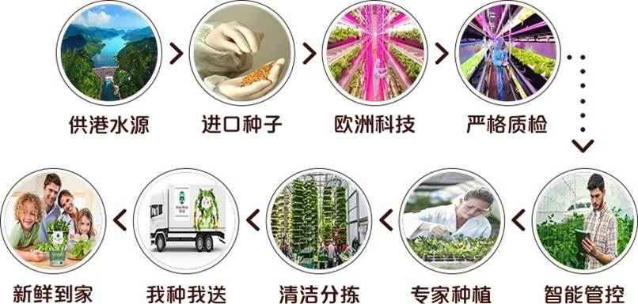
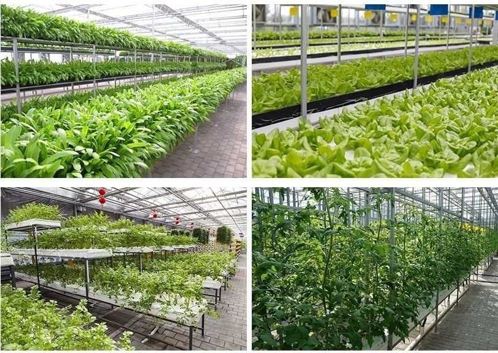
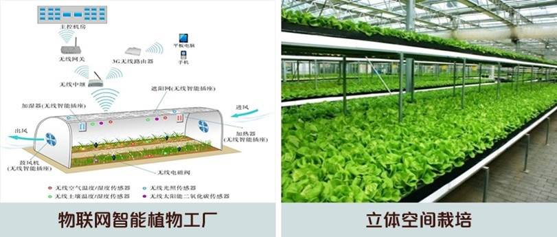
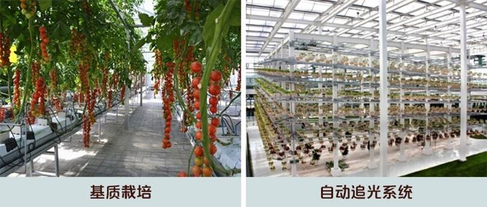
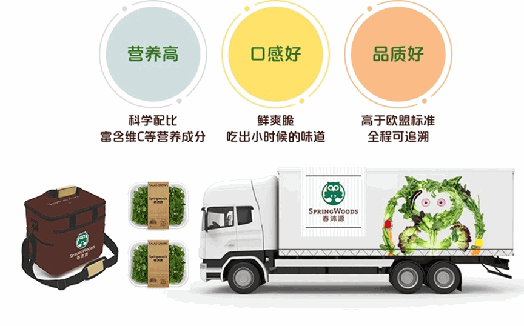

与国家农业信息化工程技术研究中心共同研发建设《基于物联网的现代农业标准化生产与质量溯源管理平台》 ，从产地到餐桌全流程监管，保证安全可信赖。
高清摄像，全天24小时现场直播温室水培种植区域及种植过程，让客户100%吃到安全、放心蔬菜。
温室无土栽培，确保产品安全，无农药、无重金属。
 整合通讯、多媒体、传感、大数据等技术进行农业作业过程数据采集，通过大数据分析方法精确指导农业作业生产。
每颗蔬菜都是对顾客的承诺，自建冷链系统，包装、仓储、运输全程严格科学管控，确保产品安全新鲜直达消费者餐桌。
